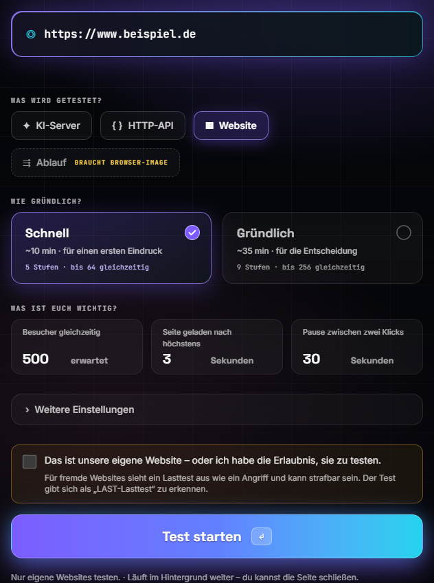
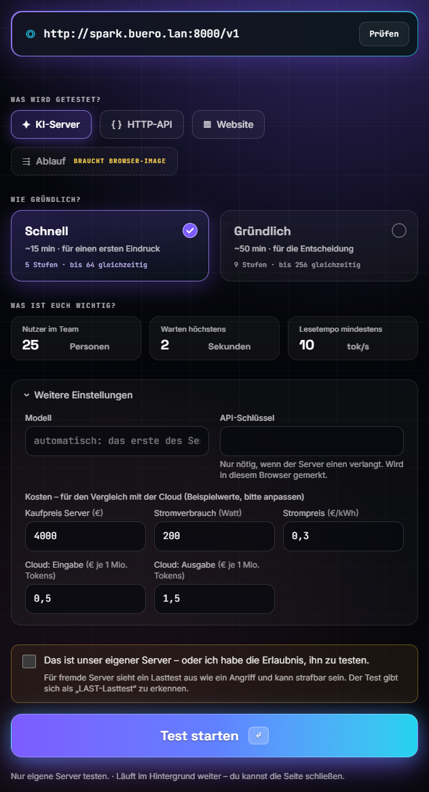
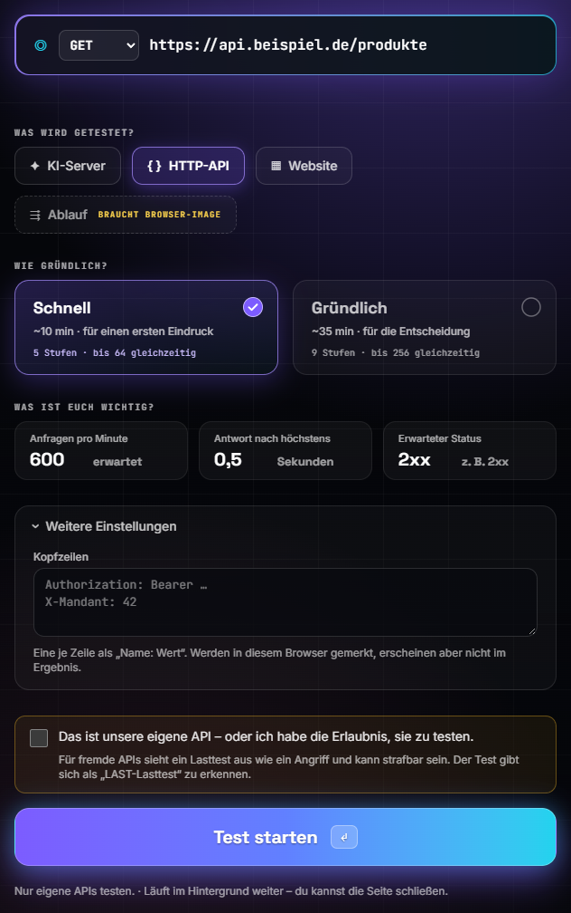
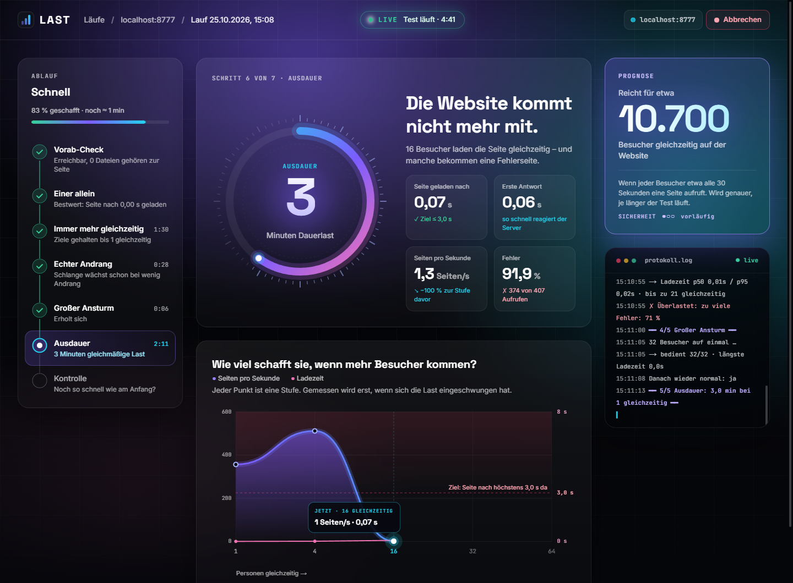
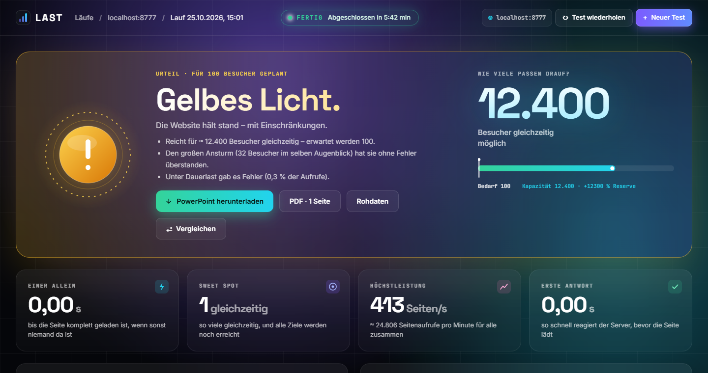
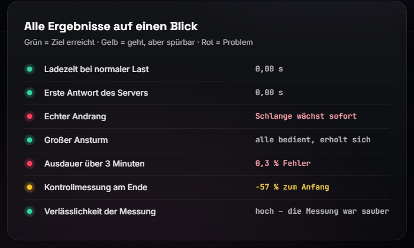
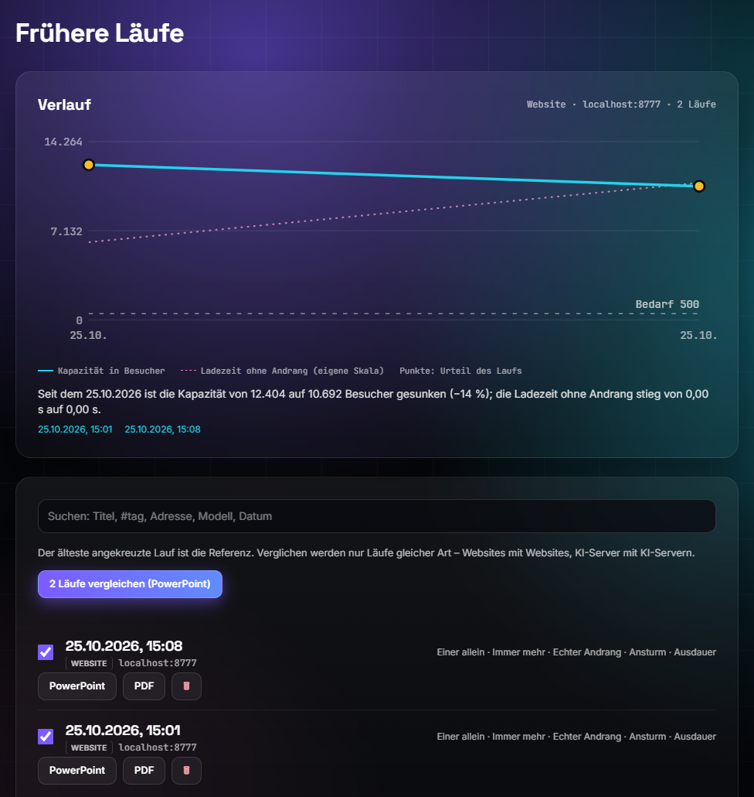

Benutzerhandbuch · Version 1.2
So testest du KI-Server, Websites, APIs und ganze Abläufe mit LAST – Schritt für Schritt erklärt, für Entwickler und alle anderen.

Du musst nicht programmieren können, um LAST zu benutzen. Wer es kann, findet am Ende jedes Themas einen Kasten mit den technischen Details.
Eine Abkürzung oder ein Rat aus der Praxis.
Hier kann etwas schiefgehen – bitte lesen, bevor du weitermachst.
Technische Details, Befehle und Hintergründe. Zum Benutzen nicht nötig.
LAST beantwortet eine einfache Frage: Wie viele Personen halten euer System gleichzeitig aus – bevor es langsam wird oder ausfällt?
Stell dir vor, ihr führt einen KI-Chat im Unternehmen ein oder startet eine neue Website. Bei zehn Nutzern läuft alles. Aber was passiert mit hundert? Das herauszufinden, wenn es ernst wird, ist zu spät. LAST probiert es vorher aus: mit simulierten Personen, die genau das tun, was echte tun würden.
LAST schickt erst eine, dann immer mehr simulierte Personen los und misst bei jeder Stufe, wie schnell und wie fehlerfrei geantwortet wird. Am Ende steht kein Zahlenfriedhof, sondern ein Satz wie „Reicht für etwa 12.400 Besucher gleichzeitig“ – dazu ein Bericht, den du weitergeben kannst.
Für Modellserver mit OpenAI-kompatibler Schnittstelle (vLLM, SGLang, llama.cpp, Ollama). Gemessen werden Wartezeit bis zum ersten Wort, Lesetempo und die Zahl der Personen, für die es reicht.
Jeder simulierte Besucher lädt die Seite samt Bildern, Styles und Skripten – wie ein Browser beim ersten Besuch. Gemessen wird die Ladezeit.
Für Schnittstellen, die Programme ansprechen (GET, POST …). Gemessen werden Antwortzeit und Fehlerquote.
Für alles mit mehreren Schritten, etwa „anmelden, dann eine Frage stellen“. Du führst den Ablauf einmal vor, LAST spielt ihn hundertfach ab.
LAST läuft auf deinem Rechner. Adressen, Zugangsdaten und Ergebnisse werden nicht an Dritte geschickt. Die Ergebnisse liegen in
einem Ordner auf deiner Festplatte (Dokumente/LAST bzw. results/).
Es gibt vier Wege. Für die meisten ist die Desktop-App der einfachste: installieren, öffnen, loslegen. Sie bringt alles mit – auch den Browser für Abläufe.
LAST Setup ….exe doppelklicken.Warnt SmartScreen? Die App ist noch nicht signiert: „Weitere Informationen“ → Trotzdem ausführen.
Deinstallieren: Einstellungen → Apps → LAST.
LAST-….dmg öffnen.Die App ist noch nicht von Apple signiert, deshalb die Rückfrage beim ersten Mal. Läuft auf Apple Silicon (M1 oder neuer).
sudo apt install ./last-desktop_….deb
Oder die .AppImage ausführbar machen (Rechtsklick → Eigenschaften, oder chmod +x) und starten. Ubuntu
22.04 oder neuer, 64-Bit.
git clone https://github.com/ peter-stuhlmann/last.git cd last docker compose up --build
Dann im Browser http://localhost:8090 öffnen. Beenden mit Strg+C oder
docker compose down.
| Variante | Ergebnisse | Protokolle bei Problemen |
|---|---|---|
| Desktop-App | Dokumente/LAST |
macOS ~/Library/Logs/LAST · Windows %APPDATA%\LAST\logs · Ubuntu ~/.config/LAST/logs
|
| Docker | Ordner results/ neben dem Projekt |
make logs oder docker compose logs |
Docker braucht Docker Desktop (Windows/macOS) bzw. Docker mit Compose-Plugin (Linux). Mit make geht es kürzer:
make up, make down, make rebuild, make logs (Windows:
winget install ezwinports.make).
Das Backend-Image gibt es als browser (Standard, ≈ 2 GB, mit Chromium für Abläufe) und slim (≈ 300 MB,
ohne Abläufe): make up SLIM=1. Die Desktop-App selbst bauen: make desktop (Python 3.12 und Node nötig).
Der erste Test dauert etwa zwei Minuten Einrichtung und rund zehn Minuten Laufzeit. Wir testen als Beispiel eine Website.

1 2 3 4 5 6 7http:// oder https://. Bei einem KI-Server steht
hier die Adresse mit /v1, zum Beispiel http://spark.buero.lan:8000/v1.
Du kannst die Seite nach dem Start schließen. Der Test läuft im Hintergrund weiter; unter „Läufe“ findest du ihn wieder. Es läuft immer nur ein Test gleichzeitig.
Ein Lasttest sieht für fremde Betreiber aus wie ein Angriff und kann strafbar sein. Deshalb verlangt LAST die Bestätigung. Läuft deine Website bei einem Hoster oder hinter einem CDN, gib dort vorher Bescheid – sonst sperrt dessen Schutz den Test (oder euch) aus.
Unter „Was ist euch wichtig?“ sagst du LAST, was für euch gut genug bedeutet. Daran misst es am Ende, ob das Ergebnis grün, gelb oder rot wird.
| Art | Feld | Bedeutung | Vorgabe |
|---|---|---|---|
| KI-Server | Nutzer im Team | Wie viele Personen sollen den Server gleichzeitig nutzen? Daraus folgt die Ampel. | – |
| Warten höchstens | Wie lange darf es bis zum ersten Wort der Antwort dauern? | 2 s | |
| Lesetempo mindestens | Wie schnell soll der Text erscheinen? Ab etwa 10 Tokens pro Sekunde liest es sich flüssig mit. | 10 tok/s | |
| Website | Besucher gleichzeitig | Wie viele erwartet ihr gleichzeitig auf der Seite? | – |
| Seite geladen nach höchstens | Bis die Seite samt Dateien komplett da ist. | 3 s | |
| Pause zwischen zwei Klicks | Wie lange liest ein Besucher, bevor er weiterklickt? Daraus wird die Besucherzahl geschätzt. | 30 s | |
| HTTP-API | Anfragen pro Minute | Wie viel Verkehr erwartet ihr? | – |
| Antwort nach höchstens | Bis die Antwort vollständig da ist. | 0,5 s | |
| Erwarteter Status | Welcher Antwortcode gilt als richtig? Zum Beispiel 2xx (alles, was mit 2 beginnt). |
2xx | |
| Ablauf | Antwortzeit | Wie lange darf der ganze Ablauf dauern? | 10 s |
| Pause zwischen Durchläufen | Wie lange „denkt“ ein Nutzer zwischen zwei Durchläufen? | 60 s |
| Art | Was du dort findest |
|---|---|
| KI-Server | Modell (leer lassen = das erste des Servers), API-Schlüssel (nur wenn der Server einen verlangt) und Kosten für den Vergleich mit der Cloud: Kaufpreis, Stromverbrauch, Strompreis, Cloud-Preise. |
| Website | Haken „Auch Bilder, Styles und Skripte laden“. Ohne Haken wird nur das HTML geholt – das misst vor allem den Server selbst. |
| HTTP-API |
Methode (GET, POST, PUT, PATCH, DELETE), Kopfzeilen (Name: Wert, eine je Zeile,
z. B. für die Anmeldung) und Body.
|
04 · Die Einstellungen erklärt · Fortsetzung
Je nach Art öffnet sich unter „Weitere Einstellungen“ etwas anderes. Die Voreinstellungen passen fast immer – ändere nur, was du wirklich brauchst.


Jede simulierte Anfrage wird wirklich ausgeführt – hunderte Male pro Minute. Das verändert Daten. Richte solche Tests nur gegen eine Testumgebung.
Kaufpreis, Stromverbrauch und Preise sind Beispielwerte. Trage vor dem Test die echten ein, sonst stimmt der Kostenvergleich nicht.
Die Live-Ansicht zeigt dir in Echtzeit, wo der Test steht und wie sich dein System schlägt.

1 2 3 4 5 6 7| Vorab-Check | Ist das Ziel erreichbar? Ist der Server frei? |
| Einer allein | Der Bestwert ohne Andrang. |
| Immer mehr | 1, 4, 16, 32, 64 … gleichzeitig. |
| Echter Andrang | Anfragen kommen zufällig, wie im Alltag. |
| Großer Ansturm | Viele auf einmal, dann Erholung. |
| Ausdauer | Gleichmäßige Last über Minuten. |
| Kontrolle | Noch so schnell wie am Anfang? |
Nur beim KI-Server gibt es zusätzlich „Lange Texte“ und Kontrollfragen.
Am Ende bekommst du ein Urteil in einem Satz, die wichtigsten Zahlen und Berichte zum Weitergeben.

1 2 3 4| Grün | Ziel erreicht. |
| Gelb | Geht, aber spürbar. |
| Rot | Problem. |
| Einer allein | Bestwert, wenn sonst niemand da ist. |
| Sweet Spot | So viele gleichzeitig, dass alle Ziele noch erreicht werden. |
| Höchstleistung | Das meiste, was das System pro Sekunde schafft. |
| Erste Antwort | Wie schnell der Server zu reagieren beginnt. |
06 · Das Ergebnis verstehen · Fortsetzung

Jede Messung bekommt einen Ampel-Punkt und einen kurzen Satz. So siehst du auf einen Blick, wo es hakt: Hier lief alles gut, nur „Echter Andrang“ und „Ausdauer“ sind rot – bei Dauerlast gab es Fehler.
Empfehlung, Vorgehen, alle Stufen mit Diagrammen, Annahmen und Grenzen. Bei Websites zusätzlich die größten Dateien und mögliche Ansatzpunkte, beim KI-Server der Kostenvergleich und die Antwortqualität. Endet mit einer Zusammenfassung auf einer Folie.
Eine A4-Seite für Entscheider: Urteil in einem Satz, die vier wichtigsten Zahlen, Begründung, zwei Diagramme und alle Ergebnisse als Ampel-Liste.
Alle Rohdaten liegen im Ergebnisordner results/results_JJJJMMTT_HHMMSS/: summary.json (alle Messwerte,
Konfiguration, Version, Seed), die Berichte, bei Abläufen schritt_NN.png und im Fehlerfall
schritt_fehler.png.
Die Bedienung ist überall gleich. Hier stehen die Besonderheiten jeder Art.
Für jeden Server mit OpenAI-kompatibler Schnittstelle. Trage die Adresse mit /v1 ein und klicke auf
Prüfen: LAST testet die Verbindung und zeigt das gefundene Modell.
| Messwert | Bedeutung |
|---|---|
| Bis zum ersten Wort | Wartezeit, bis die Antwort zu erscheinen beginnt – bei Chats die wichtigste Zahl. |
| Lesetempo | Wie schnell der Text danach erscheint (Tokens pro Sekunde). Ein Token ist ein Wortstück – im Deutschen oft eine Silbe. |
| Nutzer gleichzeitig | Für wie viele Personen es reicht, bei einer angenommenen Pause von 60 s zwischen zwei Fragen. |
| Antwortqualität | Nebenher laufen Kontrollfragen mit bekannter Antwort (Rechnen, Sortieren, JSON). Verglichen wird „richtig ohne Last“ gegen „richtig unter Last“. |
Dann heißt er für Docker nicht localhost, sondern
host.docker.internal (http://host.docker.internal:8000/v1). Unter Linux muss der Server auf
0.0.0.0 lauschen. Bei der Desktop-App gilt einfach localhost.
Jeder simulierte Besucher lädt die Seite und – wie ein Browser beim ersten Besuch, ohne Cache – die Bilder, Styles und Skripte derselben Website. Getestet wird genau eine Adresse, kein Klickpfad; dafür gibt es den „Ablauf“.
| Ladezeit | Bis die Seite samt Dateien vollständig da ist (Ziel: 3 s). |
| Erste Antwort | Bis der Server die ersten Daten schickt. |
| Seiten pro Sekunde | Wie viele Aufrufe der Server insgesamt schafft. |
| Besucher gleichzeitig | Seiten pro Sekunde × (Ladezeit + Pause zwischen zwei Klicks). |
Jede simulierte Anfrage ist genau die, die du einträgst, und gilt als richtig, wenn der Status zur Erwartung passt
(2xx). Verbindungen bleiben offen (Keep-Alive), Weiterleitungen werden nicht verfolgt. Gemessen werden Antwortzeit
(Ziel 0,5 s), erste Antwort und die Anfragen pro Minute, bei denen Antwortzeit und Fehlerquote im Ziel bleiben.
Werte von Kopfzeilen und Body werden nirgends gespeichert – nicht im Ergebnis, nicht im Bericht. Dort stehen nur die Namen der Kopfzeilen und die Größe des Bodys.
Für alles, was aus mehreren Schritten besteht oder eine Anmeldung braucht: anmelden, dann eine Frage im KI-Chat stellen. Du führst den Ablauf einmal vor – LAST macht daraus einen Test mit hunderten Nutzern.
{passwort}.
Seite nach unten blättern geht mit dem Mausrad über der Seite. Mit der Tastatur springt Tab von Element zu Element, Enter wählt aus. Geht ein Schritt schief, klicke auf „Ab Schritt n neu vorführen“.
Mit nur einem Konto teilen sich alle simulierten Nutzer dessen Sitzung. Für echte Mehrnutzerlast hake unter den
Platzhaltern „Mehrere Konten“ an und trage eine kleine Tabelle ein: erste Zeile die Platzhalter-Namen, dann je
Zeile ein Konto. Fragt die Seite schon vorab nach Benutzer und Passwort (.htaccess), öffne
„Seitenschutz“ und trage beides ein.
Oben rechts kannst du zwischen Grafisch und Als Text umschalten. Ein Schritt je Zeile:
tippe in "E-Mail" {email} tippe in "Passwort" {passwort} klicke "Anmelden" warte auf Text "Willkommen" messen ab hier tippe in "Nachricht" "Was ist ein Lasttest?" drücke Enter warte auf erste Antwort in ".antwort" warte bis ".antwort" fertig ist (2 s ruhig)
08 · Abläufe testen · Fortsetzung
| Schritt | Bedeutung |
|---|---|
tippe in "Feld" Text |
Feld = Beschriftung, Platzhaltertext oder CSS-Selektor. {name} wird im Formular zum Passwortfeld. |
klicke "Knopf" |
Knopf, Link oder Selektor. |
drücke Enter |
Oder Tab, Escape … |
warte auf Text "…" |
Bis der Text da ist. warte 2 s wartet einfach. |
messen ab hier |
Ab hier wird mitgeschnitten – genau einmal, danach mindestens ein Schritt. |
warte auf erste Antwort in "…" |
Misst, wann das erste Wort erscheint (bei KI-Chats die wichtigste Zahl). |
warte bis "…" fertig ist (2 s ruhig) |
Fertig, wenn sich der Text so lange nicht mehr ändert. |
warte auf Text "…" vor Schritte, die erst nach dem Laden funktionieren.
{passwort} – nie direkt in den Schritt schreiben.messen ab hier (und mindestens einen Schritt danach) startet der Test nicht.
Der Ablauf wird einmal in einem echten, unsichtbaren Chromium ausgeführt. Ab „messen ab hier“ werden die Anfragen der Seite mitgeschnitten und unter Last ohne Browser abgespielt – deshalb sind hunderte Nutzer möglich. Veränderliche Werte (z. B. eine Chat-ID aus einer früheren Antwort) erkennt LAST selbst und holt sie bei jeder Wiederholung frisch. Grenzen: Dauerverbindungen (WebSocket) im Messbereich lassen sich nicht abspielen; die Darstellung im Browser wird nicht gemessen. Passwörter und Sitzungs-Cookies werden nirgends gespeichert.
Jeder Test heißt „Lauf“ und bleibt gespeichert. Unter Läufe (oben links) findest du alle wieder.

1 2 3 4 5#tag), Adresse, Modell und Datum.
Auf der Ergebnisseite kannst du jedem Lauf einen Titel („Vor dem Redis-Cache“), eine Notiz („Was
war anders? Was wurde geändert?“) und Tags geben. Anpinnen hält wichtige Läufe oben. Die Messung
selbst bleibt dabei unverändert. Gelöschte Läufe liegen 7 Tage im Papierkorb (results/.papierkorb/) und lassen sich
zurückholen.
Titel, Tags, Notiz und Pin stehen in notes.json neben der summary.json. Vergleich per Kommandozeile:
python llm_stresstest.py --compare results/A results/B --labels "vorher,nachher"
LAST besteht aus zwei Teilen: einer Weboberfläche (Next.js) und der Testlogik (Python). Beides lässt sich auch ohne Oberfläche benutzen.
| Teil | Aufgabe |
|---|---|
web/ |
Die Weboberfläche „LAST“ (Next.js, Tailwind). Container web, Port 8090 nur auf 127.0.0.1. |
stresstest_web.py |
Python-Backend: startet Tests, liefert Ergebnisse und Berichte. Container backend, ohne offenen Port. |
llm_stresstest.py |
Testlogik für KI-Server und Prüfung der Messqualität – auch allein nutzbar. |
web_stresstest.py |
Lasttest für Websites und HTTP-APIs. |
flow_*.py |
Abläufe: Schritt-Sprache, Aufzeichnung (Playwright), Abspielen per HTTP. |
report_*.py · desktop/ |
PowerPoint, PDF und Vergleichsbericht · die Electron-App für macOS, Windows und Ubuntu. |
# KI-Server schnell testen python llm_stresstest.py --base-url http://spark.buero.lan:8000/v1 --quick # Alle Optionen python llm_stresstest.py --help # Im Docker-Container docker compose run --rm backend python llm_stresstest.py --base-url http://spark.buero.lan:8000/v1 --quick
Ohne Docker (Python 3.9 oder neuer): python -m pip install aiohttp python-pptx reportlab, dann
python stresstest_web.py und http://localhost:8090 öffnen. Mit --host 0.0.0.0 ist die Seite
im Netzwerk erreichbar – ohne Passwortschutz.
| Befehl | Wirkung |
|---|---|
make up / make down |
Starten (baut beim ersten Mal) bzw. beenden. Oberfläche unter http://localhost:8090. |
make rebuild |
Nach Änderungen am Code neu bauen und starten. |
make logs · make status |
Protokoll mitlesen · Zustand der Container. |
make test · make test-all |
Python-Tests · alle Prüfungen inkl. Oberfläche und Durchlauf-Tests. |
make up SLIM=1 |
Backend ohne Browser (kleiner, keine Abläufe). |
10 · Für Entwickler · Fortsetzung
| Option | Wirkung |
|---|---|
--quick |
Schnelles Profil (≈ 15 min) statt des gründlichen (≈ 50 min). |
--target-users N |
Bedarf für die Ampel („Nutzer im Team“). |
--think-time S |
Pause einer Person zwischen zwei Fragen (Standard 60 s). |
--length-mix mixed |
Längen schwanken wie im Alltag. |
--shared-prefix 1500 |
Gleicher System-Prompt vor jeder Frage – misst den Prefix-Cache. |
--seed 42 |
Gleiche Texte wie in einem früheren Lauf. |
--rates 30,60,120 |
„Echter Andrang“ mit festen Fragen pro Minute. |
--probe-interval S |
Abstand der Kontrollfragen (0 = aus). |
--saturation-stop N |
Höhere Stufen überspringen, wenn die Leistung N Stufen lang gleich bleibt (0 = aus). |
--hw-price · --server-watts · --power-price · --cloud-price-in/-out |
Werte für den Kostenvergleich. |
KV-Cache, Warteschlange und Verdrängungen liest LAST aus /metrics des Modellservers (vLLM und SGLang: standardmäßig
an). Gemessene Zeiten enthalten die Netzwerklatenz zum Server.
Ein Lasttest ist ein mächtiges Werkzeug. Benutze es verantwortungsvoll – und kenne seine Grenzen.
Für fremde Betreiber sieht ein Lasttest aus wie ein Angriff und kann strafbar sein. Teste nur, was dir gehört oder wofür du eine
ausdrückliche Erlaubnis hast. LAST gibt sich im User-Agent als LAST-Lasttest zu erkennen.
Läuft die Website bei einem Hoster oder hinter einem CDN, sag dort vorher Bescheid. Sonst sperrt dessen Schutz den Test – oder euch.
POST, PUT, PATCH und DELETE verändern Daten, hunderte Male pro Minute. Richte sie nur gegen eine Testumgebung.
Die Oberfläche ist nur vom eigenen Rechner erreichbar (127.0.0.1). Öffne sie nicht ohne Schutz im Netzwerk.
summary.json und nicht im Bericht gespeichert.
| Grenze | Was das für dich heißt |
|---|---|
| Nur eine Adresse | Bei „Website“ wird genau eine Adresse getestet. Für Klickpfade gibt es den „Ablauf“. |
| Fremde Dateien | Schriften, Karten, Werbung und Dateien anderer Server werden nie angefragt. |
| Darstellung im Browser | Wie lange der Browser zum Zeichnen braucht, wird nicht gemessen. |
| Ein Konto, viele Sitzungen | Mit einem Konto teilen sich alle Nutzer dessen Sitzung. Für echte Mehrnutzerlast „Mehrere Konten“ verwenden. |
| Dauerverbindungen | Seiten mit WebSocket im Messbereich lassen sich nicht abspielen. |
| Netzwerk dazwischen | Gemessene Zeiten enthalten die Latenz zwischen Messrechner und Ziel. Im Büro-LAN ist das vernachlässigbar, über VPN eher nicht. |
| Schätzungen | „Reicht für etwa …“ ist eine Schätzung mit Annahmen (z. B. 30 s Pause bei Websites, 60 s bei KI-Servern). Sie stehen im Bericht. |
| Problem | Lösung |
|---|---|
| „Das Test-Backend antwortet nicht“ |
Docker: Läuft der Container backend? make status und make logs-backend zeigen es.
Desktop-App: App schließen und neu öffnen, dann das Protokoll prüfen (Pfade in Kapitel 2).
|
| „Prüfen“ meldet, der Server sei nicht erreichbar |
Adresse mit /v1? Läuft der Server auf demselben Rechner und du nutzt Docker? Dann
host.docker.internal statt localhost. Gibt es eine Firewall oder ein VPN dazwischen?
|
| „Ablauf“ ist grau und zeigt „braucht Browser-Image“ |
Das Backend läuft ohne Browser (slim). Starte ohne SLIM=1; die Desktop-App bringt den Browser immer
mit.
|
| „Gerade läuft ein Test“ | Es läuft immer nur ein Test. Warte, bis er fertig ist, oder brich ihn oben rechts ab. |
| Test startet nicht |
Die Bestätigung („Das ist unser eigenes System …“) fehlt, oder die Adresse beginnt nicht mit http:// /
https://.
|
| Warnung „Verlässlichkeit der Messung“ | Dein Messrechner war überlastet. Schließe andere Programme, nutze einen stärkeren Rechner oder weniger Last, und wiederhole den Test. |
| Hohe Fehlerquote schon bei wenigen Nutzern | Schützt ein CDN, eine Firewall oder ein Rate-Limit das Ziel? Dann sperrt es den Test. Informiere den Betreiber oder teste die Testumgebung direkt. |
| Ein Schritt im Ablauf scheitert |
Die Fehlermeldung nennt die Zeile; schritt_fehler.png im Ergebnisordner zeigt die Seite im Moment des Fehlers.
Meist hilft ein warte auf Text "…" vor dem Schritt.
|
| Windows warnt (SmartScreen) / macOS fragt nach | Die App ist noch nicht signiert. Windows: „Weitere Informationen“ → „Trotzdem ausführen“. macOS: Rechtsklick → „Öffnen“. |
12 · Hilfe bei Problemen · Fortsetzung
Lasttest – Ein Test, bei dem viele Nutzer gleichzeitig simuliert werden.
Stufe – Ein Abschnitt des Tests mit fester Zahl gleichzeitiger Personen.
Latenz – Wartezeit zwischen Anfrage und Antwort.
Durchsatz – Wie viel das System pro Sekunde schafft.
Token – Ein Wortstück, mit dem KI-Modelle rechnen.
Prefix-Cache – Gemerkter Anfang einer Anfrage, damit gleiche Einleitungen nicht neu berechnet werden.
KV-Cache – Der Arbeitsspeicher, in dem ein KI-Server angefangene Gespräche hält.
p95 – Der Wert, den 95 von 100 Anfragen unterbieten. Zeigt, wie es den langsameren Nutzern geht.
Keep-Alive – Verbindungen bleiben offen und werden wiederverwendet.
Kapazität – Für wie viele Personen es reicht, bevor die Ziele verfehlt werden.
Ziel – Dein Grenzwert, etwa „Seite nach höchstens 3 s“.
Lauf – Ein einzelner durchgeführter Test samt Ergebnissen.
LAST ist Open Source. Quellcode, Releases und Fehlermeldungen findest du auf github.com/peter-stuhlmann/last. Die
ausführliche technische Beschreibung steht in der Datei LIESMICH.md im Projekt.